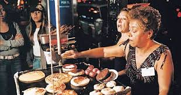
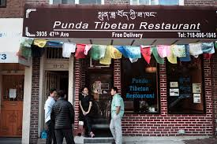

Food Delights in Jackson Heights
Jackson Heights is a foodie's paradise, with a diverse range of cuisines from around the world. Here are a few must-try spots:
-

Arepa Lady: This Venezuelan restaurant is a local favorite, known for its delicious arepas (cornmeal cakes) filled with various savory ingredients like shredded beef, black beans, and cheese. They also offer other Venezuelan specialties like empanadas and cachapas.
-

Punda Indian Restaurant: If you're looking for flavorful Indian cuisine, Punda is a great option. They offer a wide variety of dishes, from classic curries to tandoori specialties, all made with fresh ingredients and authentic spices.